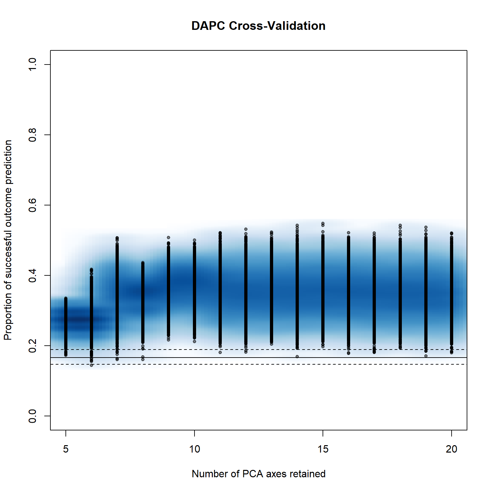
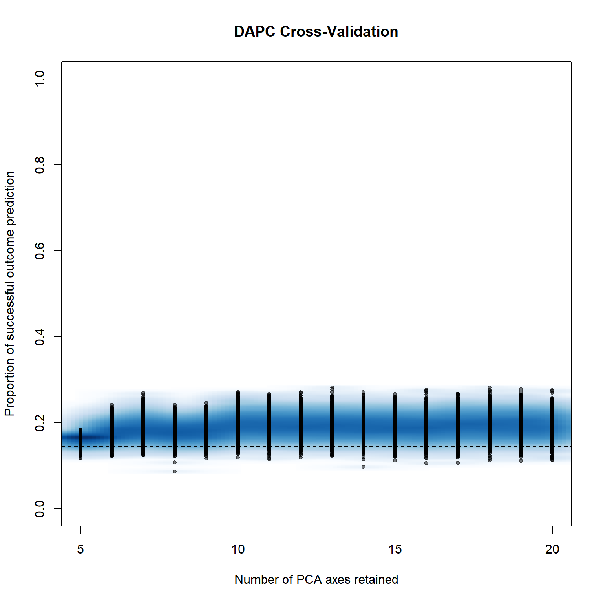
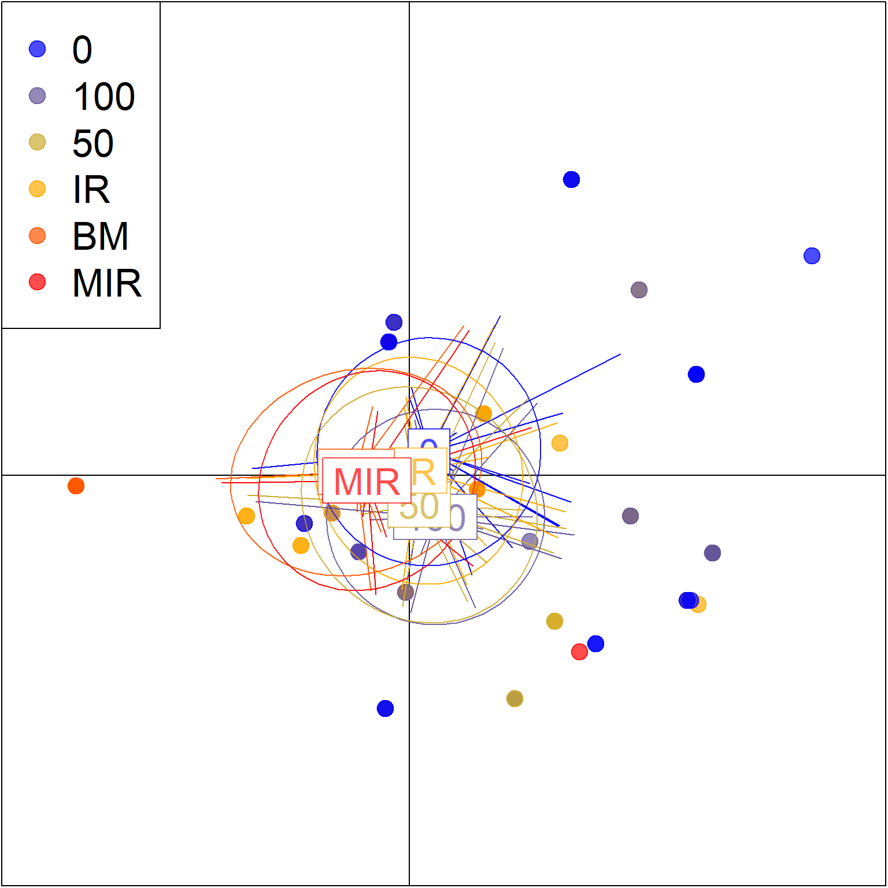

Discriminant analysis of principal comonents will give us some more insights into possible clustering within the population.
We would like to se eif there are effects of our treatments, variety and fungicide programmes.
Another interesting thing to look at is year to year variation of the pathogen population structure.
list.of.packages <-
c(
"tidyverse",
"devtools",
"here",
"readxl",
"poppr",
"egg",
"parallel"
)
new.packages <-
list.of.packages[!(list.of.packages %in% installed.packages()[, "Package"])]
#Download packages that are not already present in the library
if (length(new.packages))
install.packages(new.packages)
packages_load <-
lapply(list.of.packages, require, character.only = TRUE)
#Print warning if there is a problem with installing/loading some of packages
if (any(as.numeric(packages_load) == 0)) {
warning(paste("Package/s: ", paste(list.of.packages[packages_load != TRUE], sep = ", "), "not loaded!"))
} else {
print("All packages were successfully loaded.")
}## [1] "All packages were successfully loaded."rm(list.of.packages, new.packages, packages_load)
#if instal is not working try
#install.packages("package_name", repos = c(CRAN="https://cran.r-project.org/"))path <- here::here("data", "gen data", "final", "pop.csv")
monpop <- read.genalex(path, ploidy = 3)
splitStrata(monpop) <- ~variety/genotype/year
monpop##
## This is a genclone object
## -------------------------
## Genotype information:
##
## 29 original multilocus genotypes
## 1315 triploid individuals
## 12 codominant loci
##
## Population information:
##
## 3 strata - variety, genotype, year
## 61 populations defined -
## KE_6A1_2016, KE_8A1_2016, SE_6A1_2016, ..., CL_8A1_2019, SM_13A2_2019, SM_6A1_2019Very good tutorials are avaialble at adegent page and Grünwald lab web page.
Set paralel processing. This argument should be removed if the code is to be reproduced on machine which can not devote muliple cores, although that is probably not a good idea.
We will also assign a number of cores to be used. We will set it to be one less than the maximum no. of cores, so we dont ‘sufficate’ the computer.
#Determine the OS to assign apropriate character string for parallel processing
parallel_proc <-
ifelse(Sys.info()['sysname'] == "Windows", "snow", "multicore")
cpus <- ifelse(detectCores()>1, c(detectCores()-1), 1)
cpus## [1] 3setPop(monpop) <- ~variety
set.seed(999)
system.time(pramx <- xvalDapc(tab(monpop, NA.method = "mean"), pop(monpop),
n.pca = 10:20, n.rep = 1000,
parallel = parallel_proc,
ncpus = cpus))
## user system elapsed
## 1.07 2.76 411.29pramx[2:6]## $`Median and Confidence Interval for Random Chance`
## 2.5% 50% 97.5%
## 0.1486146 0.1658857 0.1865321
##
## $`Mean Successful Assignment by Number of PCs of PCA`
## 10 11 12 13 14 15 16
## 0.3715842 0.3556017 0.3547476 0.3528834 0.3543063 0.3514315 0.3532643
## 17 18 19 20
## 0.3503348 0.3465681 0.3485085 0.3425435
##
## $`Number of PCs Achieving Highest Mean Success`
## [1] "10"
##
## $`Root Mean Squared Error by Number of PCs of PCA`
## 10 11 12 13 14 15 16
## 0.6301132 0.6469447 0.6479093 0.6497086 0.6481190 0.6510133 0.6490196
## 17 18 19 20
## 0.6520900 0.6558652 0.6539410 0.6599883
##
## $`Number of PCs Achieving Lowest MSE`
## [1] "10"pramx[-1]## $`Median and Confidence Interval for Random Chance`
## 2.5% 50% 97.5%
## 0.1486146 0.1658857 0.1865321
##
## $`Mean Successful Assignment by Number of PCs of PCA`
## 10 11 12 13 14 15 16
## 0.3715842 0.3556017 0.3547476 0.3528834 0.3543063 0.3514315 0.3532643
## 17 18 19 20
## 0.3503348 0.3465681 0.3485085 0.3425435
##
## $`Number of PCs Achieving Highest Mean Success`
## [1] "10"
##
## $`Root Mean Squared Error by Number of PCs of PCA`
## 10 11 12 13 14 15 16
## 0.6301132 0.6469447 0.6479093 0.6497086 0.6481190 0.6510133 0.6490196
## 17 18 19 20
## 0.6520900 0.6558652 0.6539410 0.6599883
##
## $`Number of PCs Achieving Lowest MSE`
## [1] "10"
##
## $DAPC
## #################################################
## # Discriminant Analysis of Principal Components #
## #################################################
## class: dapc
## $call: dapc.data.frame(x = as.data.frame(x), grp = ..1, n.pca = ..2,
## n.da = ..3)
##
## $n.pca: 10 first PCs of PCA used
## $n.da: 5 discriminant functions saved
## $var (proportion of conserved variance): 0.991
##
## $eig (eigenvalues): 181 26.39 18.79 3.409 0.7485 vector length content
## 1 $eig 5 eigenvalues
## 2 $grp 1315 prior group assignment
## 3 $prior 6 prior group probabilities
## 4 $assign 1315 posterior group assignment
## 5 $pca.cent 60 centring vector of PCA
## 6 $pca.norm 60 scaling vector of PCA
## 7 $pca.eig 23 eigenvalues of PCA
##
## data.frame nrow ncol
## 1 $tab 1315 10
## 2 $means 6 10
## 3 $loadings 10 5
## 4 $ind.coord 1315 5
## 5 $grp.coord 6 5
## 6 $posterior 1315 6
## 7 $pca.loadings 60 10
## 8 $var.contr 60 5
## content
## 1 retained PCs of PCA
## 2 group means
## 3 loadings of variables
## 4 coordinates of individuals (principal components)
## 5 coordinates of groups
## 6 posterior membership probabilities
## 7 PCA loadings of original variables
## 8 contribution of original variablespramx[-1]$`Number of PCs Achieving Highest Mean Success`## [1] "10"scatter(
pramx$DAPC,
# col = other(monpop)$comparePal,
cex = 1.5 ,
pch=18:23,
legend = TRUE,
clabel = TRUE,
posi.leg = "topright",
scree.pca = TRUE,
posi.da = "bottom",
posi.pca = "topleft",
cleg = .9,
xax = 1,
yax = 2,
inset.solid = 1,
ratio.da = .2
)dev.copy(png,filename=here::here("results", "gen","dapc", "var.png"),
width =600, height= 600);## png
## 3dev.off ()## png
## 2Prepare the data in genalex format once again. We can define only thre stratums, so we will prepare another file which will be re-used for same purpose as above.
fin <- readRDS(file = here::here("data", "gen data", "final", "gendata.rds") )
fin <-
unite(fin, "Ind", idd, year, remove = F)
fin <-
unite(fin, "Pop", treatment, Genotype, year)
popcol <- match("Pop",names(fin))
idcol <- match("Ind",names(fin))
gen <-
fin[ , c(idcol,popcol,match("D13",names(fin)):match("X__24",names(fin)))]
path <- here::here("data", "gen data", "final", "pop2.csv")
data.frame(ssr = c(12,"PInf_Ireland"),
samples = nrow(gen),
pop = length(unique(fin$Pop)))write.table(data.frame(ssr = 12, samples = nrow(gen), pop = length(unique(fin$Pop))),
path,
sep=",", col.names=FALSE, row.names = FALSE)
write.table( "PInf_Ireland",
path,
sep = ",", row.names = FALSE,
col.names = FALSE, append = T)
names(gen)[grep("X__", names(gen))] <- ""
write.table(gen,
path,
sep = ",",
row.names = FALSE,
col.names = !file.exists("myDF.csv"), append = T)So now we have created another file in genalex format, pop2.csv.
path <- here::here("data", "gen data", "final", "pop2.csv")
monpop <- read.genalex(path, ploidy = 3)
splitStrata(monpop) <- ~treatment/genotype/year
monpop##
## This is a genclone object
## -------------------------
## Genotype information:
##
## 29 original multilocus genotypes
## 1315 triploid individuals
## 12 codominant loci
##
## Population information:
##
## 3 strata - treatment, genotype, year
## 74 populations defined -
## 0_6A1_2016, 0_8A1_2016, 100_6A1_2016, ..., IR_6A1_2019, 50_6A1_2019, IR_8A1-1_2019setPop(monpop) <- ~treatment
set.seed(999)
system.time(pramx <- xvalDapc(tab(monpop, NA.method = "mean"), pop(monpop),
n.pca = 5:20,
n.rep = 1000,
parallel = parallel_proc,
ncpus = cpus))
## user system elapsed
## 1.29 4.16 579.91pramx[-1]## $`Median and Confidence Interval for Random Chance`
## 2.5% 50% 97.5%
## 0.1482989 0.1670398 0.1880296
##
## $`Mean Successful Assignment by Number of PCs of PCA`
## 5 6 7 8 9 10 11
## 0.1644902 0.1826818 0.1925873 0.1790766 0.1855829 0.1986248 0.1979529
## 12 13 14 15 16 17 18
## 0.1925181 0.1907940 0.1921735 0.1910467 0.1896027 0.1941032 0.1921203
## 19 20
## 0.1920632 0.1923475
##
## $`Number of PCs Achieving Highest Mean Success`
## [1] "10"
##
## $`Root Mean Squared Error by Number of PCs of PCA`
## 5 6 7 8 9 10 11
## 0.8355862 0.8175364 0.8077066 0.8211066 0.8146639 0.8017177 0.8023775
## 12 13 14 15 16 17 18
## 0.8077833 0.8095016 0.8081438 0.8092499 0.8106819 0.8062380 0.8082190
## 19 20
## 0.8082706 0.8079827
##
## $`Number of PCs Achieving Lowest MSE`
## [1] "10"
##
## $DAPC
## #################################################
## # Discriminant Analysis of Principal Components #
## #################################################
## class: dapc
## $call: dapc.data.frame(x = as.data.frame(x), grp = ..1, n.pca = ..2,
## n.da = ..3)
##
## $n.pca: 10 first PCs of PCA used
## $n.da: 5 discriminant functions saved
## $var (proportion of conserved variance): 0.991
##
## $eig (eigenvalues): 15.3 9.625 4.225 2.027 1.341 vector length content
## 1 $eig 5 eigenvalues
## 2 $grp 1315 prior group assignment
## 3 $prior 6 prior group probabilities
## 4 $assign 1315 posterior group assignment
## 5 $pca.cent 60 centring vector of PCA
## 6 $pca.norm 60 scaling vector of PCA
## 7 $pca.eig 23 eigenvalues of PCA
##
## data.frame nrow ncol
## 1 $tab 1315 10
## 2 $means 6 10
## 3 $loadings 10 5
## 4 $ind.coord 1315 5
## 5 $grp.coord 6 5
## 6 $posterior 1315 6
## 7 $pca.loadings 60 10
## 8 $var.contr 60 5
## content
## 1 retained PCs of PCA
## 2 group means
## 3 loadings of variables
## 4 coordinates of individuals (principal components)
## 5 coordinates of groups
## 6 posterior membership probabilities
## 7 PCA loadings of original variables
## 8 contribution of original variablesscatter(
pramx$DAPC,
# col = other(monpop)$comparePal,
cex = 1.3 ,
legend = TRUE,
clabel = TRUE,
posi.leg = "topleft",
scree.pca = TRUE,
posi.pca = "topright",
posi.da = "bottomright",
cleg = .9,
xax = 1,
yax = 2,
inset.solid = 1
)
dev.copy(png,filename=here::here("results", "gen","dapc", "treatment.png"),
width = 600, height= 600);## png
## 3dev.off ()## png
## 2setPop(monpop) <- ~year
set.seed(999)
system.time(pramx <- xvalDapc(tab(monpop, NA.method = "mean"), pop(monpop),
n.pca = 5:20,
n.rep = 1000,
parallel = parallel_proc,
ncpus = cpus))## user system elapsed
## 1.28 3.67 560.02pramx[-1]## $`Median and Confidence Interval for Random Chance`
## 2.5% 50% 97.5%
## 0.2276972 0.2475752 0.2713200
##
## $`Mean Successful Assignment by Number of PCs of PCA`
## 5 6 7 8 9 10 11
## 0.5714399 0.6455599 0.6404781 0.6570257 0.6542511 0.6677174 0.6673807
## 12 13 14 15 16 17 18
## 0.6746419 0.6723268 0.6745808 0.6753796 0.6754561 0.6718231 0.6746880
## 19 20
## 0.6749401 0.6742428
##
## $`Number of PCs Achieving Highest Mean Success`
## [1] "16"
##
## $`Root Mean Squared Error by Number of PCs of PCA`
## 5 6 7 8 9 10 11
## 0.4321234 0.3569802 0.3621226 0.3455767 0.3480716 0.3349190 0.3352096
## 12 13 14 15 16 17 18
## 0.3277609 0.3301696 0.3278154 0.3271443 0.3271816 0.3308077 0.3278817
## 19 20
## 0.3275667 0.3283145
##
## $`Number of PCs Achieving Lowest MSE`
## [1] "15"
##
## $DAPC
## #################################################
## # Discriminant Analysis of Principal Components #
## #################################################
## class: dapc
## $call: dapc.data.frame(x = as.data.frame(x), grp = ..1, n.pca = ..2,
## n.da = ..3)
##
## $n.pca: 15 first PCs of PCA used
## $n.da: 3 discriminant functions saved
## $var (proportion of conserved variance): 0.998
##
## $eig (eigenvalues): 1252 347.3 255 vector length content
## 1 $eig 3 eigenvalues
## 2 $grp 1315 prior group assignment
## 3 $prior 4 prior group probabilities
## 4 $assign 1315 posterior group assignment
## 5 $pca.cent 60 centring vector of PCA
## 6 $pca.norm 60 scaling vector of PCA
## 7 $pca.eig 23 eigenvalues of PCA
##
## data.frame nrow ncol
## 1 $tab 1315 15
## 2 $means 4 15
## 3 $loadings 15 3
## 4 $ind.coord 1315 3
## 5 $grp.coord 4 3
## 6 $posterior 1315 4
## 7 $pca.loadings 60 15
## 8 $var.contr 60 3
## content
## 1 retained PCs of PCA
## 2 group means
## 3 loadings of variables
## 4 coordinates of individuals (principal components)
## 5 coordinates of groups
## 6 posterior membership probabilities
## 7 PCA loadings of original variables
## 8 contribution of original variablesscatter(
pramx$DAPC,
# col = other(monpop)$comparePal,
cex = 1.3 ,
legend = TRUE,
clabel = TRUE,
posi.leg = "bottomleft",
scree.pca = TRUE,
posi.pca = "topright",
posi.da = "topleft",
cleg = .9,
xax = 1,
yax = 2,
inset.solid = 1
)dev.copy(png,filename=here::here("results", "gen","dapc", "year.png"),
width = 600, height= 600);## png
## 3dev.off ()## png
## 2session_info()## - Session info ----------------------------------------------------------
## setting value
## version R version 3.6.1 (2019-07-05)
## os Windows 10 x64
## system x86_64, mingw32
## ui RTerm
## language (EN)
## collate English_United States.1252
## ctype English_United States.1252
## tz Europe/London
## date 2019-11-04
##
## - Packages --------------------------------------------------------------
## package * version date lib source
## ade4 * 1.7-13 2018-08-31 [1] CRAN (R 3.6.1)
## adegenet * 2.1.1 2018-02-02 [1] CRAN (R 3.6.1)
## ape 5.3 2019-03-17 [1] CRAN (R 3.6.1)
## assertthat 0.2.1 2019-03-21 [1] CRAN (R 3.6.1)
## backports 1.1.5 2019-10-02 [1] CRAN (R 3.6.1)
## boot 1.3-22 2019-04-02 [2] CRAN (R 3.6.1)
## broom 0.5.2 2019-04-07 [1] CRAN (R 3.6.1)
## callr 3.3.2 2019-09-22 [1] CRAN (R 3.6.1)
## cellranger 1.1.0 2016-07-27 [1] CRAN (R 3.6.1)
## class 7.3-15 2019-01-01 [2] CRAN (R 3.6.1)
## classInt 0.4-2 2019-10-17 [1] CRAN (R 3.6.1)
## cli 1.1.0 2019-03-19 [1] CRAN (R 3.6.1)
## cluster 2.1.0 2019-06-19 [2] CRAN (R 3.6.1)
## coda 0.19-3 2019-07-05 [1] CRAN (R 3.6.1)
## colorspace 1.4-1 2019-03-18 [1] CRAN (R 3.6.1)
## crayon 1.3.4 2017-09-16 [1] CRAN (R 3.6.1)
## DBI 1.0.0 2018-05-02 [1] CRAN (R 3.6.1)
## deldir 0.1-23 2019-07-31 [1] CRAN (R 3.6.1)
## desc 1.2.0 2018-05-01 [1] CRAN (R 3.6.1)
## devtools * 2.2.1 2019-09-24 [1] CRAN (R 3.6.1)
## digest 0.6.22 2019-10-21 [1] CRAN (R 3.6.1)
## dplyr * 0.8.3 2019-07-04 [1] CRAN (R 3.6.1)
## e1071 1.7-2 2019-06-05 [1] CRAN (R 3.6.1)
## egg * 0.4.5 2019-07-13 [1] CRAN (R 3.6.1)
## ellipsis 0.3.0 2019-09-20 [1] CRAN (R 3.6.1)
## evaluate 0.14 2019-05-28 [1] CRAN (R 3.6.1)
## expm 0.999-4 2019-03-21 [1] CRAN (R 3.6.1)
## fastmap 1.0.1 2019-10-08 [1] CRAN (R 3.6.1)
## fastmatch 1.1-0 2017-01-28 [1] CRAN (R 3.6.0)
## forcats * 0.4.0 2019-02-17 [1] CRAN (R 3.6.1)
## fs 1.3.1 2019-05-06 [1] CRAN (R 3.6.1)
## gdata 2.18.0 2017-06-06 [1] CRAN (R 3.6.0)
## generics 0.0.2 2018-11-29 [1] CRAN (R 3.6.1)
## ggplot2 * 3.2.1 2019-08-10 [1] CRAN (R 3.6.1)
## glue 1.3.1 2019-03-12 [1] CRAN (R 3.6.1)
## gmodels 2.18.1 2018-06-25 [1] CRAN (R 3.6.1)
## gridExtra * 2.3 2017-09-09 [1] CRAN (R 3.6.1)
## gtable 0.3.0 2019-03-25 [1] CRAN (R 3.6.1)
## gtools 3.8.1 2018-06-26 [1] CRAN (R 3.6.0)
## haven 2.1.1 2019-07-04 [1] CRAN (R 3.6.1)
## here * 0.1 2017-05-28 [1] CRAN (R 3.6.1)
## hms 0.5.2 2019-10-30 [1] CRAN (R 3.6.1)
## htmltools 0.4.0 2019-10-04 [1] CRAN (R 3.6.1)
## httpuv 1.5.2 2019-09-11 [1] CRAN (R 3.6.1)
## httr 1.4.1 2019-08-05 [1] CRAN (R 3.6.1)
## igraph 1.2.4.1 2019-04-22 [1] CRAN (R 3.6.1)
## jsonlite 1.6 2018-12-07 [1] CRAN (R 3.6.1)
## KernSmooth 2.23-15 2015-06-29 [2] CRAN (R 3.6.1)
## knitr 1.25 2019-09-18 [1] CRAN (R 3.6.1)
## later 1.0.0 2019-10-04 [1] CRAN (R 3.6.1)
## lattice 0.20-38 2018-11-04 [2] CRAN (R 3.6.1)
## lazyeval 0.2.2 2019-03-15 [1] CRAN (R 3.6.1)
## LearnBayes 2.15.1 2018-03-18 [1] CRAN (R 3.6.0)
## lifecycle 0.1.0 2019-08-01 [1] CRAN (R 3.6.1)
## lubridate 1.7.4 2018-04-11 [1] CRAN (R 3.6.1)
## magrittr 1.5 2014-11-22 [1] CRAN (R 3.6.1)
## MASS 7.3-51.4 2019-03-31 [2] CRAN (R 3.6.1)
## Matrix 1.2-17 2019-03-22 [2] CRAN (R 3.6.1)
## memoise 1.1.0 2017-04-21 [1] CRAN (R 3.6.1)
## mgcv 1.8-28 2019-03-21 [2] CRAN (R 3.6.1)
## mime 0.7 2019-06-11 [1] CRAN (R 3.6.0)
## modelr 0.1.5 2019-08-08 [1] CRAN (R 3.6.1)
## munsell 0.5.0 2018-06-12 [1] CRAN (R 3.6.1)
## nlme 3.1-140 2019-05-12 [2] CRAN (R 3.6.1)
## pegas 0.12 2019-10-05 [1] CRAN (R 3.6.1)
## permute 0.9-5 2019-03-12 [1] CRAN (R 3.6.1)
## phangorn 2.5.5 2019-06-19 [1] CRAN (R 3.6.1)
## pillar 1.4.2 2019-06-29 [1] CRAN (R 3.6.1)
## pkgbuild 1.0.6 2019-10-09 [1] CRAN (R 3.6.1)
## pkgconfig 2.0.3 2019-09-22 [1] CRAN (R 3.6.1)
## pkgload 1.0.2 2018-10-29 [1] CRAN (R 3.6.1)
## plyr 1.8.4 2016-06-08 [1] CRAN (R 3.6.1)
## polysat 1.7-4 2019-03-06 [1] CRAN (R 3.6.1)
## poppr * 2.8.3 2019-06-18 [1] CRAN (R 3.6.1)
## prettyunits 1.0.2 2015-07-13 [1] CRAN (R 3.6.1)
## processx 3.4.1 2019-07-18 [1] CRAN (R 3.6.1)
## promises 1.1.0 2019-10-04 [1] CRAN (R 3.6.1)
## ps 1.3.0 2018-12-21 [1] CRAN (R 3.6.1)
## purrr * 0.3.3 2019-10-18 [1] CRAN (R 3.6.1)
## quadprog 1.5-7 2019-05-06 [1] CRAN (R 3.6.0)
## R6 2.4.0 2019-02-14 [1] CRAN (R 3.6.1)
## Rcpp 1.0.2 2019-07-25 [1] CRAN (R 3.6.1)
## readr * 1.3.1 2018-12-21 [1] CRAN (R 3.6.1)
## readxl * 1.3.1 2019-03-13 [1] CRAN (R 3.6.1)
## remotes 2.1.0 2019-06-24 [1] CRAN (R 3.6.1)
## reshape2 1.4.3 2017-12-11 [1] CRAN (R 3.6.1)
## rlang 0.4.1 2019-10-24 [1] CRAN (R 3.6.1)
## rmarkdown 1.16 2019-10-01 [1] CRAN (R 3.6.1)
## rprojroot 1.3-2 2018-01-03 [1] CRAN (R 3.6.1)
## rstudioapi 0.10 2019-03-19 [1] CRAN (R 3.6.1)
## rvest 0.3.4 2019-05-15 [1] CRAN (R 3.6.1)
## scales 1.0.0 2018-08-09 [1] CRAN (R 3.6.1)
## seqinr 3.6-1 2019-09-07 [1] CRAN (R 3.6.1)
## sessioninfo 1.1.1 2018-11-05 [1] CRAN (R 3.6.1)
## sf 0.8-0 2019-09-17 [1] CRAN (R 3.6.1)
## shiny 1.4.0 2019-10-10 [1] CRAN (R 3.6.1)
## sp 1.3-1 2018-06-05 [1] CRAN (R 3.6.1)
## spData 0.3.2 2019-09-19 [1] CRAN (R 3.6.1)
## spdep 1.1-3 2019-09-18 [1] CRAN (R 3.6.1)
## stringi 1.4.3 2019-03-12 [1] CRAN (R 3.6.0)
## stringr * 1.4.0 2019-02-10 [1] CRAN (R 3.6.1)
## testthat 2.2.1 2019-07-25 [1] CRAN (R 3.6.1)
## tibble * 2.1.3 2019-06-06 [1] CRAN (R 3.6.1)
## tidyr * 1.0.0 2019-09-11 [1] CRAN (R 3.6.1)
## tidyselect 0.2.5 2018-10-11 [1] CRAN (R 3.6.1)
## tidyverse * 1.2.1 2017-11-14 [1] CRAN (R 3.6.1)
## units 0.6-5 2019-10-08 [1] CRAN (R 3.6.1)
## usethis * 1.5.1 2019-07-04 [1] CRAN (R 3.6.1)
## vctrs 0.2.0 2019-07-05 [1] CRAN (R 3.6.1)
## vegan 2.5-6 2019-09-01 [1] CRAN (R 3.6.1)
## withr 2.1.2 2018-03-15 [1] CRAN (R 3.6.1)
## xfun 0.10 2019-10-01 [1] CRAN (R 3.6.1)
## xml2 1.2.2 2019-08-09 [1] CRAN (R 3.6.1)
## xtable 1.8-4 2019-04-21 [1] CRAN (R 3.6.1)
## yaml 2.2.0 2018-07-25 [1] CRAN (R 3.6.0)
## zeallot 0.1.0 2018-01-28 [1] CRAN (R 3.6.1)
##
## [1] C:/Users/mlade/Documents/R/win-library/3.6
## [2] C:/Program Files/R/R-3.6.1/library